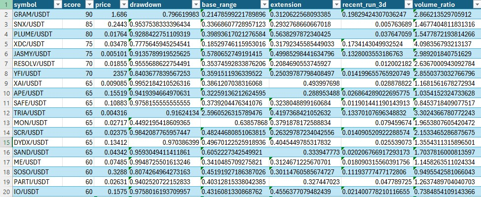
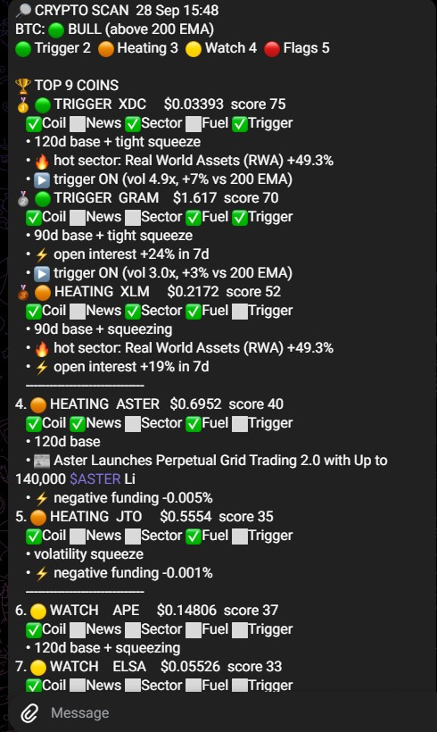

A popular idea, and a chart that seemed to prove it.
In late September a coin I was watching rose 83% in one day. Looking back at its chart, the setup was obvious: a long, flat base after a crash, then a small wake-up before the explosion.
Two crypto accounts were posting the same idea that week. Posts like that collect hundreds of thousands of views. None of them show a test.
"Buy this type of chart. Sell in October. Thank me later."
Can a script find coins in that quiet base across the whole market, before the move, and do those coins actually do better than the rest?
Turning "looks like accumulation" into rules a machine can check.
Coins pulled
Liquid USDT pairs from Bybit's public API, with daily and 4-hour candles, via ccxt.
Filters
At least 50% below its high, not already running, and liquid enough to trade.
Signals scored
Base length, volatility squeeze, OBV, volume, strength vs Bitcoin, funding, open interest and more.
Alert cycle
A ranked shortlist sent to Telegram automatically through Windows Task Scheduler.


My first backtest said nearly everything worked. That was the problem.
of coins touched +30% within 30 days. Almost any pick looked like a winner.
correlation between my score and 14-day excess return. Barely above zero.
- 63/64coins finished the month higher. A market-wide rally, not skill.
- TodayI picked coins by today's trading volume, so coins that had just pumped were more likely to be included. Survivorship bias.
- 1 dateA single starting point, 64 samples. One lucky month can look like a strategy.
- 961samples across 132 coins and 16 weekly test dates, from June to September.
- ThenCoins picked by their volume at the test date, not today. No peeking at the winners.
- MedianEvery return compared with the median coin on the same date, so a rally can't flatter the result.
Most of my "smart" signals made things worse.
For each signal: how much better or worse coins did over 14 days when the signal was present, compared with when it wasn't.
Momentum arrives late
Volume spikes, OBV and strength vs Bitcoin tend to fire after a move has started. Scoring them meant buying later, not earlier.
The quiet part holds
The only signals that helped describe the calm before a move: a beaten-down coin, a long base, shrinking volatility.
Big pumps hide from charts
Before the 79 moves of +50%, the average score was 13, lower than the overall 17. Those moves were mostly news-driven.
Score the calm. Use momentum only for timing. Read the news.
Version 3 ranks coins by the coil, then checks free news feeds, sector heat and futures positioning. The output is four tiers. These are real results from the first live scan.
XDC
$0.0339 · score 75The highest-ranked coin on 28 September.
- A 120-day base, with volatility near its lowest level in months
- Its sector, real-world assets, was up 49% that day
- Volume at 4.9× normal and price just above its 200-day average. The volume spike also warns it may already be moving
XLM
$0.2172 · score 52Ready, but not moving yet.
- A 90-day base with volatility still contracting
- Same hot real-world-assets sector as XDC
- Open interest up 19% in a week while price stayed flat: traders positioning early
APE
$0.1481 · score 37The pattern is there. Nothing else is, yet.
- A 120-day base with volatility squeezing
- No catalyst, no sector heat, no futures positioning
- Stays on the list so a change in any of those moves it up a tier
RESOLV
skippedThe chart that looked perfect.
- One of the flattest bases on the market, for a bad reason: a March exploit minted 80M unbacked stablecoins and drained its liquidity
- Delisted by Korea's two biggest exchanges and placed on Binance's monitoring list
- A flat chart can mean quiet buying or a dead project. The news layer tells them apart
Snapshot from 28 September 2026. A watchlist, not a recommendation.
One day, five things broke.
All of this happened on 28 September. Each failure changed how the tool works.
What's proven, what isn't, and what's being measured now.
Supported by the data
- The three filters: +7.1% over 14 days, the only effect large enough to trust
- Long bases and volatility squeezes: small but positive
Not proven yet
- The tiers and the news layer have no historical test; free news data doesn't go back far enough
- All results come from one 16-week period
Running now
- Every alert is logged with its price at the time
- Results are checked 3, 7 and 14 days later against Bitcoin
- Built entirely on free data, so testing costs nothing
A test that proves you wrong is worth more than a strategy that looks good.